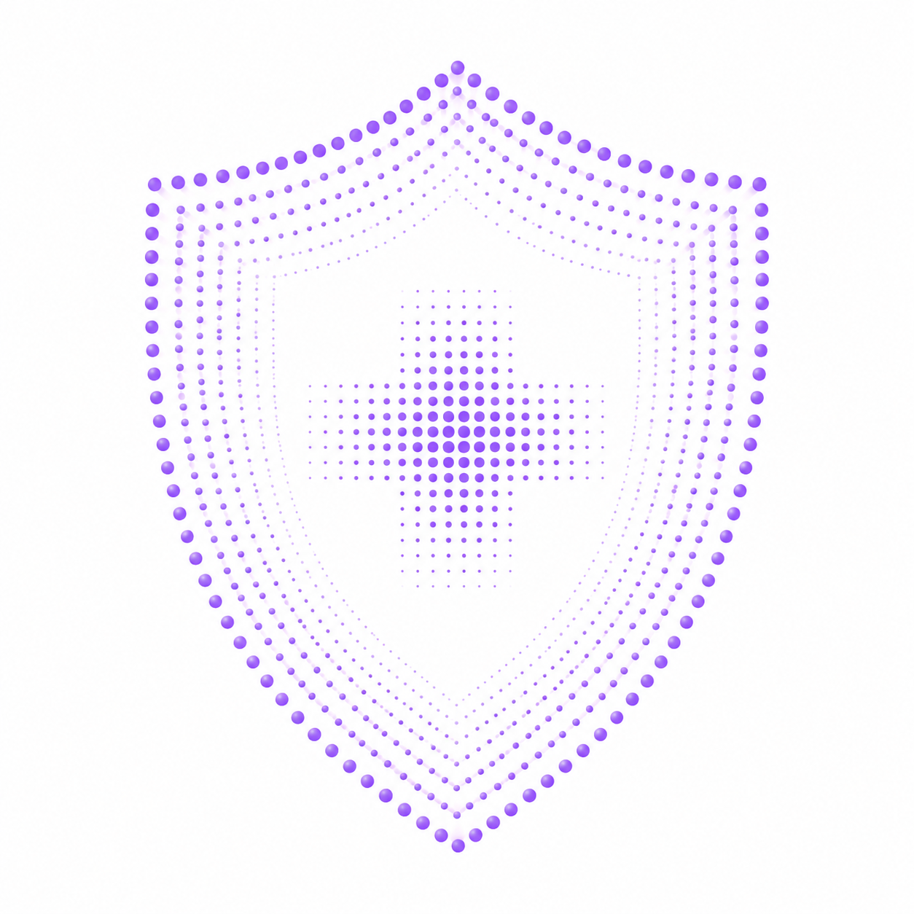
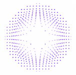
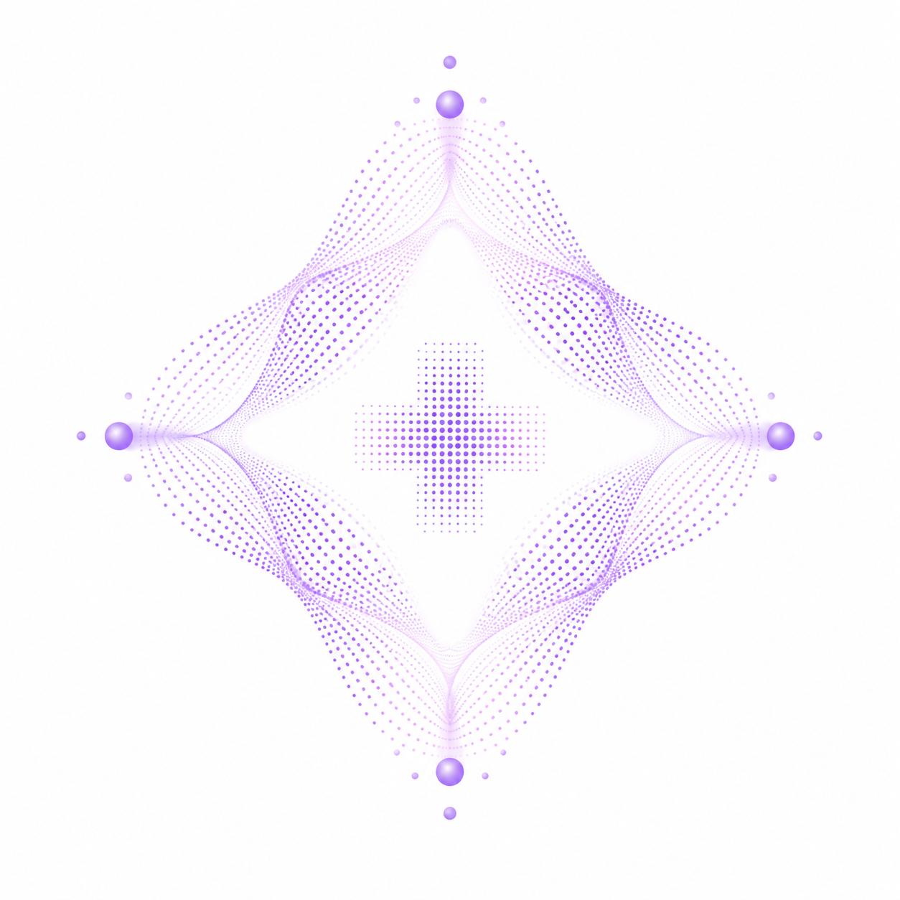

Facilities that demonstrate a sustained, organisation-wide commitment to infection prevention and control as a core pillar of patient care.

Programmes that introduce evidence-based innovation to improve environmental hygiene standards, protocols, and outcomes across the facility.

Organisations where high environmental hygiene standards directly translate to measurable improvements in patient safety and clinical outcomes.